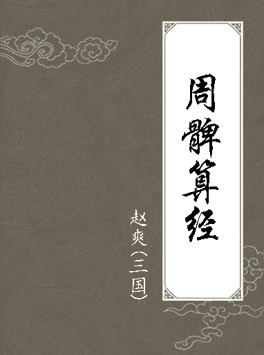

在探索中国古代数学的辉煌历程中，我们不得不对那些在数学领域留下深刻印记的先贤们表示崇高的敬意。从秦汉到明清，无数的数学家们以他们的智慧和勤奋，推动了数学理论的发展和数学应用的普及。他们的工作不仅在当时的社会中发挥了重要作用，而且对后世的数学教育和科学研究产生了深远的影响。

算筹精妙通天地，成就非凡载史册。

在探索中国古代数学的辉煌历程中，我们不得不对那些在数学领域留下深刻印记的先贤们表示崇高的敬意。从秦汉到明清，无数的数学家们以他们的智慧和勤奋，推动了数学理论的发展和数学应用的普及。他们的工作不仅在当时的社会中发挥了重要作用，而且对后世的数学教育和科学研究产生了深远的影响。
刘徽
主要数学贡献有：发展了传统的率概念和齐同原理， 指出它们是 “算之纲纪”，至今对改革中小学数学教材有指导意义；在世界数学史上首创极限思想和无穷小分割方法，并严格证明了 《九章算术》提出的圆面积公式和自己提出的刘徽原理，将多面体体积理论建立在无穷小分割之上；在中国首创求圆周率的科学方法，奠定了中国圆周率近似值的计算领先世界千余年的基础；以演绎逻辑为主，全面论证 《九章算术》的算法，奠定中国传统数学的理论基础，建立中国传统数学的理论体系。刘徽逻辑之严谨，所达到的高度，在中国古代无居其右者。刘徽的一生是为数学刻苦探求的一生，他不是沽名钓誉的庸人，而是学而不厌的伟人，他给我们中华民族留下了宝贵的财富。
赵爽
主要贡献是约在222年深入研究了《周髀算经》，为该书写了序言，并作了详细注释。其中一段530余字的 “勾股圆方图”注文是数学史上极有价值的文献。它记述了勾股定理的理论证明，将勾股定理表述为：“勾股各自乘，并之，为弦实。开方除之，即弦。”证明方法叙述为：“按弦图，又可以勾股相乘为朱实二，倍之为朱实四，以勾股之差自相乘为中黄实，加差实，亦成弦实。”既勾股定理。
王蕃
依据张衡学说，重制浑天仪。在数学方面，王蕃修改并发展了张衡的天文数学，经过科学验证，修正了张衡球体积公式中取用π的圆周率。在他的论说中，用勾股定理求出圆周率3.1556，比刘徽求出的较大（刘徽是3.14），比张衡求出的为小（张衡为3.16），与200年后祖冲之的“祖率”（3.1415926与3.1415927之间）非常接近。
《周髀算经》
中国最古老的天文算法的著作之一，在天算史上占有重要地位，唐初将其列为《算经十书》其中一种，是古老的天文学和数学著作，主要阐明当时的盖天说和四分历法。
《九章算术》
在算术方面，《九章算术》的主要成就有分数运算、比例问题和“盈不足”算法；在几何方面，《九章算术》总结了生产、生活实践中大量的几何知识，在方田、商功和勾股章中提出了很多面积、体积的计算公式和勾股定理的应用；在代数方面，《九章算术》中的代数内容具有当时世界的先进水平。
祖冲之
他最杰出的贡献是求得相当精确的圆周率，他计算出圆周率在 3.1415926 和 3.1415927 之间，成为世界上最早把圆周率数值推算到七位数字以上的科学家。直到１６世纪才被德国数学家奥托（1550—1650）和荷兰工程师安托尼兹（1543—1620）重新得到。
祖暅
中国南北朝时期算学家、天文学家，祖冲之之子。同父祖冲之算出球面积的问题。以“幂势既同则积不容异”，从先贤刘徽“牟合方盖”之法，算出球体积。他的主要贡献是修补编辑祖冲之的《缀术》，因此可以说《缀术》是他们父子共同完成的数学杰作。《九章算术》少广章中李淳风注所引述的“祖暅之开立圆术”，详细记载了祖冲之父子解决球体积问题的方法。
张邱建
他的主要成就是最大公约数与最小公倍数的计算，著有《张邱建算经》3 卷。《张邱建算经》的体例为问答式，条理精密，文词古雅，是中国古代数学史上的杰作，也是世界数学资料库中的一份遗产。
《缀书》
中国南北朝时期的一部算经，汇集了祖冲之和祖暅之父子的数学研究成果：其一是确定圆周率在3.1415926与3.1415927之间，准确到小数点后六位；其二是由面积差求边长或圆的直径（开差幂）；其三是天文历法中的有限差分法。
王孝通
著有《缉古算经》，在世界上最早提出三次方程式及其解法，唐显庆元年，国子监设“算学”，以《算经十书》为教科书，列《缉古算经》为十书之一，并规定此书学习年限长达三年，对后世有深远影响。
李淳风
他是中国古代科学家和历史文化名人他和袁天罡所著的《推背图》以其预言的准确性而著称于世。李淳风是世界上第一个给风定级的人，注解的《周髀算经》和《古算十经》是世界上最早的数学教材。
李冶
他在数学专著《测圆海镜》（12 卷）中通过勾股容圆问题全面地论述了设立未知数和列方程的步骤、技巧、运算法则，以及文字符号表示法等，使天元术发展到相当成熟的新阶段。《益古演段》（3 卷）则是他为天元术初学者所写的一部简明易晓的入门书。
《缉古算术》
王孝通所著《缉古算术》，被用作国子监算学馆数学教材，奉为数学经典，在中国数学史上，《缉古算经》是中国现存最早介绍开带从立方法的算书，它集中体现了中国古代数学家早在公元七世纪在建立和求解三次方程等方面所取得的重要成就。
朱世杰
所著《算学启蒙》3 卷，内容包括常用数据、度量衡和田亩面积单位的换算、算四则运算法则、筹算简法、分数、比例、面积、体积、盈不足术、高阶等差级数求和、数字方程解法、线性方程组解法、天元术等，是一部较全面的数学启蒙书籍。《数学启蒙》曾传入朝鲜和日本，产生了一定的影响。
杨辉
中国古代数学家和数学教育家。他在总结民间乘除捷算法、“垛积术”、纵横图以及数学教育方面，均做出了重大的贡献。他是世界上第一个排出丰富的纵横图和讨论其构成规律的数学家。还曾论证过弧矢公式，时人称为“辉术”。而且他非常重视数学教育的普及和发展，在《算法通变本末》中，杨辉为初学者制订的"习算纲目"是中国数学教育史上的重要文献。
秦九韶
秦九韶所著的《数书九章》，全书 18 卷，81 题，包括 9 大类：大衍类、天时类、田域类、测望类、赋役类、钱谷类、营建类、军旅类、市易类。该书是一部划时代的巨作，它总结了前人在开方中所使用的列筹方法，将其整齐而有系统地应用到高次方程的有理或无理根的求解上去，其中对“大衍求一术”和“正负开方术”等有十分深入的研究。“大衍求一术”和“正负开方术”要比欧美国家早 600 年，代表了中世纪数学发展的主流，并将中国古代数学推向了巅峰。
《测圆海镜》
李冶在《测圆海镜》中系统而概括地总结了天元术，使文词代数开始演变成符号代数。《测圆海镜》数学上的成就有三点：“天元术”，即列方程解决问题的一种“机械化”程序，相当于现代设x为未知数列方程的方法，这是一项具有世界意义的创举；勾股形解法，把传统的勾股形研究推进到一个新的层次；数学抽象化的新起点。此书虽然形式上仍采用问题集的表述方式，但问题显然已不是从实际生活中得来的，而是出于数学研究的需要产生的，只是出于传统，披上了“实用”的外衣，这对中国古代数学无疑是一种重要的突破和补充，就内容看，给出了一些专门的概念和公式(“识别杂记”)，采用了演绎推理的方法等，在中国数学思想发展史中占有重要的地位。
《益古演段》
《益古演段》把天元术用于解决实际问题，研究对象是日常所见的方、圆面积。书中新旧二术并列，新术是李冶的代数方法——天元术；旧术是蒋周的几何方法——条段法，这是一种图解法，因为方程各项常用一段一段的条形面积表示，所以得名．该书揭示了两者的联系与区别，对我们了解条段法向天元术的过渡、探讨数学发展规律有重要意义。在数学理论上，《益古演段》也有创新。《益古演段》的价值不仅在于普及天元术，理论上也有创新首先，李冶善于用传统的出入相补原理及各种等量关系来减少题目中的未知数个数，化多元问题为一元问题。其次，李冶在解方程时采用了设辅助未知数的新方法，以简化运算。
王文素
他是继宋杨辉、秦九韶和元朱世杰后明代最杰出的数学巨匠，著有《算学宝鉴》全称《新集通证古今算学宝鉴》，完成于明嘉靖三年（1524年）。全书分12本42卷，近50万字。是一部博大精深的中国古典数学巨著，是代表明代数学中兴的最高水平的数学巨著。王文素的数学成就是中国数学史连续性的有力证据。
吴敬
中国明代景泰年间数学家，著有的《九章算法比类大全》对程大位《算法统宗》以及明中叶以后的数学产生了重大影响，基本代表了明初百年间数学发展的大致水平。他在中国古算的普及和广泛应用于生产、生活实践方面做了重要工作。算盘是由筹算演变而来，筹算开始于春秋时期，直至明代才被算盘所代替。有关算盘的古书记载，最早见于吴敬的《九章详注比类算法大全》。
柯尚迁
他是明代理学家、数学家、历史上第一个对珠算算法和算盘图式作全面、详细叙述的珠算大师。他精儒学，尤擅珠算学，潜心著书立说，写成《三礼全经释原》、《数学通轨》等多部著作。所著《曲礼外集》刊于万历六年（1578年），其中《补学礼六艺》附录之《数学通轨》是明代重要数学著作，流传甚广。现珍藏在日本三重县宇治山田市神宫文库。书中引有“九归总歌法语”、“撞归法语”、“还原法语”等，在珠算发展史上有重要地位。他首定十三位算盘，还著有《周礼全经释原》12卷、附录2卷，《三礼全经释原》及《曲礼全经类释》14卷。《数学通轨》是中国历史上早期最适用的珠算书，比徽州程大位的《算法统宗》还要早14年。书中制定了算盘图式：梁上二珠，梁下五珠，十五档。这个创举，连同书中的术语和口诀，都被我国、日本以及东南亚各国人民所采用，广泛流传，一直沿用。因此，柯尚迁被后人誉为珠算鼻祖。
《数书九章》
该书是一部划时代的巨作，它总结了前人在开方中所使用的列筹方法，将其整齐而有系统地应用到高次方程的有理或无理根的求解上去，其中对“大衍求一术”和“正负开方术”等有十分深入的研究。“大衍求一术”和“正负开方术”要比欧美国家早 600 年，代表了中世纪数学发展的主流，并将中国古代数学推向了巅峰。
《算学宝鉴》
对当时见到的数学著作及民间算法、算题，均能“留心通证”，明确指出原书之谬；对“占病法”、“孕推男女”等不科学的算题一律不集。因该书有“通证”的毅力、“新集”的魄力，故有去伪存真、补缺续断、正本清源的结果。 《算学宝鉴》在通证的基础上，“复增乘除图草，定位式样，开方演段，捷径成术”。集算诗中提到的“悬空定位无踪影，带从开方有正翻”，正是其在学术上高人一等、算法上技高一筹的写照。 《算学宝鉴》研究了一元高次方程的数值解法，内容详实可贵，这充分说明一元高次方程数值解法及天元术、四元术在明朝并未完全失传。王文素在解法中所用名词术语、演算程序，基本上与宋元数学一致，并有所发展和创新。 《算学宝鉴》是一部应用数学书，书中例举的米、肉、马、麻等价格资料应有尽有，船费、脚银、税种等经济史料不胜枚举。我们可以从这些资料透视当时的社会生活。 《算学宝鉴》循九章古制，承宋元先河，选精集粹，代表了当时数学、珠算的最高水平。